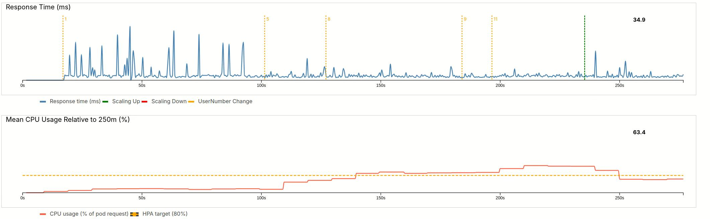
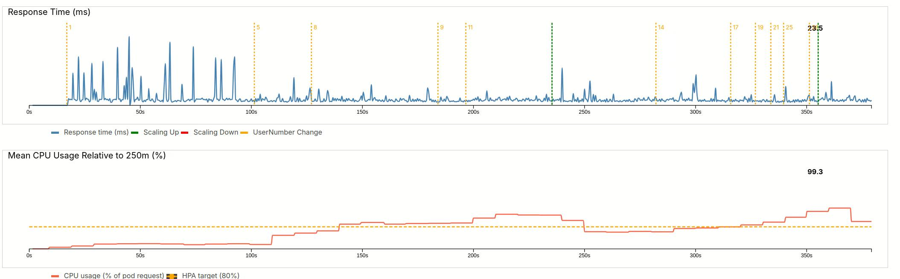
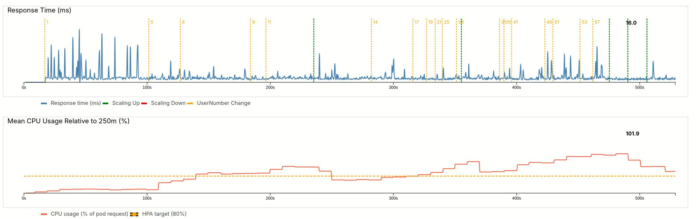
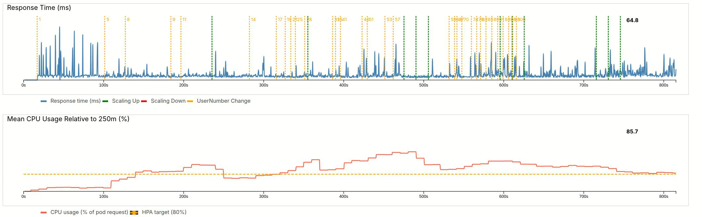
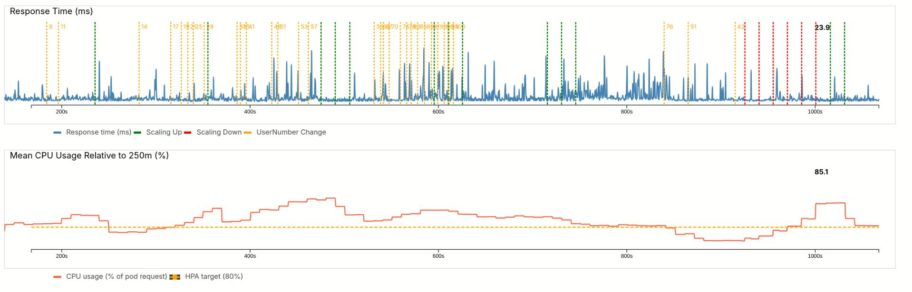
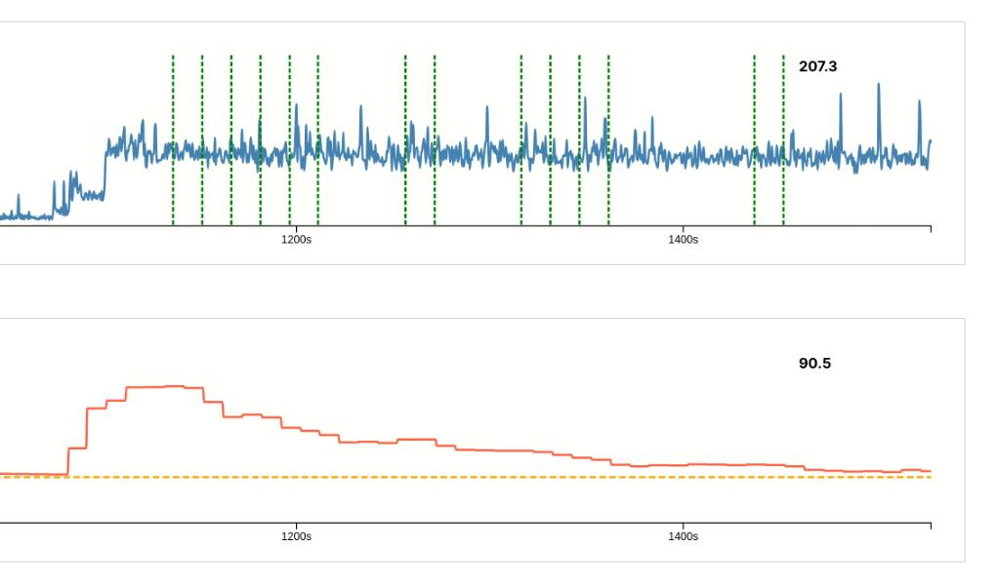

flowchart TD %% External client Client[Client] %% Service block SVC[Service ] %% Node-proxy block Node[Kube-Proxy ] %% Pod group block subgraph PodsGroup [Pod replicas ] PodA[Pod A] PodB[Pod B] PodC[Pod C] end %% Control plane subgraph ControlPlane [Kubernetes Control Plane] HPA[Horizontal Pod Autoscaler] Metrics[Metrics Server] API[Kubernetes API Server] end class ControlPlane ctrlPlane; class PodsGroup, dataPlane; %% Connections Client -->|request| SVC SVC -->|forward| Node Node --> PodA Node --> PodB Node --> PodC PodA -.->|metrics| Metrics PodB -.->|metrics| Metrics PodC -.->|metrics| Metrics Metrics --> HPA HPA -->|scale up/down| API API -->|create/delete pods| PodsGroup
Kubernetes for the seasoned non-cloud software developer
Software Engineering
Applied Engineering
A hands-on demo exploring how Kubernetes Horizontal Pod Autoscaling behaves under real, chaotic load, and why this matters even for ML and embedded engineers.
1 Kubernetes for the seasoned non-cloud software developer
For software developers who have been around for some time, the ever-evolving landscape of tools sometimes becomes frustrating.
Today I want to write about one aspect of the development cycle: deployment.
Until a few years ago, deployment was not so much in the development team’s focus. We had separate teams for operations, then slowly DevOps came into our world. From packages, the more advanced teams moved to Docker. Then came the orchestration with carefully crafted scripts or docker compose and docker swarm for the lazy. And then there is Kubernetes.
In 2017, if you were not deeply working on cloud solutions back then , you had little connection to it. Nowadays, that is different.
The software world gets more and more connected. Even the epitome of non cloud software, embedded software, gets connected. Great, if your team can have a separate cloud engineer. But what if not? What if responsibility for your cloud backend needs to be shared? This requires not only theoretical knowledge of cloud containerization but some hard-working skills.
Same for many AI startups search for engineers that know this kind of orchestration. In part because it is essential for the business to operate, in part because the existing engineers are not able to deliver this. The engineers skills are heavily focused on AI, so that a extra engineer is required to take care of the cloud orchestration.
You can easily understand the standard mechanics of Kubernetes: a container goes in a pod, which has restricted hardware resources. When the pod reaches repeatedly its limits, a new pod is created.
That is the theory, I create a small demo to visualize how this works in practice.
So if you work on any solution that uses a cloud backend and the number of users is dynamic, have a look at this article.
1.1 Scaling and load balancing
When the number of users grows, the servers of your backend have an increased load. At some point one CPU is not enough; you need more. But how much more? And when to scale up?
That is the topic of vertical and horizontal scaling. With Kubernetes resources are constrained.
Vertical scaling just increases the resources assigned to your application
Horizontal scaling adds clones of your application and uses a load balancer.
Some examples may help.
Vertical scaling is best if the user number stays constant, but the process requires more and more resources: ML training, or complex simulation with unforeseen resource demand are such examples.
Horizontal scaling works best if the requests can be treated in parallel. This is the standard for web apps, where more and more users send requests. In this demo, we look into horizontal scaling.
1.2 Kubernetes Theory
Before we explain the application, let’s look into some Kubernetes Theory. If you have already read this somewhere else skip to the next section.
The following diagram shows the architecture of the Kubernetes cluster.
We start with the user, that is our Client.
The Client sends his ‘Request’ to a Service. This services acts as load balancer and calls Kube-Proxy on each node to distribute requests. On the node, there are uses several clones of the same Container. The application container in Kubernetes is wrapped inside a resource constrained Pod Therefore there a multiple replicas of the same Pod (A,B, C).
The Kubernetes Control Plane contains the orchestration to handle the scaling. We have the Metrics Server which collects CPU and memory usage from each Pod. The Horizontal Pod Autoscaler (HPA) acts on these metrics and scales the pod number up and down. These actions are executed using Kubernetes API Server.
Key to scaling is the logic inside the HPA, see the deep-dive at the end of the post.
2 The demo project architecture
2.1 A simple core process
Many real applications are too complicated to play around with the Kubernetes settings. Instead, we just want something stable. It is not our interest to see when the system brakes.
However, for a demo that is exactly what we want.
To achieve this, we use a simple CPU burn process. This comes with some flaws, as we will later see, but it allows us to focus more on Kubernetes mechanics.
This burn process is inside a small backend. The method is put in a small C++ backend using httplib for the webserver.
void burn_cpu(int ms) {
auto end = high_resolution_clock::now() + milliseconds(ms);
volatile double x = 0.0001;
while (high_resolution_clock::now() < end) {
x = std::sin(x) * std::cos(x) * std::tan(x + 1e-6);
}
}2.2 The users
Of course the most important part in the drama of autoscaling is played by the user.
Our users are the hyperactive. They can not wait long for the news to appear on the screen. They constantly press F5 and hope for new content.
When I first implemented the behavior I did naive implementation. However, without network lag, that leads to many many requests per second already for the first two users. That is one of reasons many servers have rate limits. It is not only the cost by request, but also the scaling cost.
That is actually not what we want. The users should show a defined behavior, and not act too quickly. If we spawn a new pod, that pod is automatically consumed by the users as they can get even quicker results.
One thing we could do is to prescribe the refresh rate in the frontend:
setInterval(() => {
while (inflight < targetUsers) {
inflight++;
fireUser();
}
inflightEl.textContent = String(inflight);
}, REFRESH_RATE);Using REFRESH_RATE changes what we are actually simulating, we switch from a CPU based simulation to a request per second based simulation. The CPU becomes the side effect. Using the CPU load as metric for the HPA does not work in this case. Any improvement of the backend processing time does not lead to quicker cycles as these are bounded.
Instead, we simulate real user behavior. We add a variable think time at the end of fireUser and let FireUser call itself. The same way a user would need to absorb the new content on the screen before pressing F5 again.
fetch(`/compute?ms=${workMs}`)
...
.finally(() => {
...
// Realistic user: wait before next action
const thinkTime = 200 + Math.random() * 300; // 200–500ms
fireUser();
}, thinkTime);
});2.3 Distributed architecture
A Typescript frontend allows us to control the app.

As in a normal backend, the number of users drives the numbers of requests. We use a 1:1 mapping for simplicity. Different webservices have different tasks. We assume that the tasks are identically sized for each user. Therefore, we only allow the size of the task to change, that is how long the CPU is busy. The first plot shows the response time for each request.
In addition, we read metrics from the backend. We will explore the details further below. From this metrics we get the CPU usage per pod, and the average load relative to the resource constraint.
The frontend and the backend are both wrapped inside Docker containers. This is the architecture:
flowchart TD User[User Browser] subgraph FRONTEND_CONTAINER[Container Frontend] FE_APP[Typescript Frontend] end subgraph BACKEND_CONTAINER[Container Backend] BE_APP[C++ Webserver] end User -->|HTTP request| FE_APP FE_APP -->|Compute| BE_APP FE_APP -->|Metrics| BE_APP
2.4 Single Node Kubernetes setup
Kubernetes is designed for large scale cloud architectures with many machines. In the cluster world these computers are called nodes. For simplicity I will stick to one node, my pc. If you want to trial multi-node usage you can use KillerCoda. However, each node only has only 1 CPU in the free version. You will need to deal with node synchronization and fetching metrics from several nodes. At scale this is solved using tools like Prometheus. Complex orchestration becomes easier using a package manager for Kubernetes like Helm.
You can run Kubernetes on your own PC with Minikube.
2.4.1 Setting up the demo Kubernetes server
Some important commands before you start building your Docker images.
# Start Minikube
minikube start
# We need metrics, therefore we use the metrics server
minikube addons enable metrics-server
# We need to use the minikube docker daemon
eval "$(minikube docker-env)"Default Kubernetes settings are conservative to avoid oscillations. Metric intervals are long to avoid acting on spikes. In contrast, for our demo that is exactly what we want. The metrics interval is usually 60s. We can lower it to 15s.
# Optional: change metrics server delay:
kubectl -n kube-system patch deployment metrics-server \
--type='json' \
-p='[
{
"op": "replace",
"path": "/spec/template/spec/containers/0/args",
"value": ["--metric-resolution=15s"]
}
]'
kubectl rollout restart deployment metrics-server -n kube-system3 Starting the demo
First, you need to clone the repo
git clone https://github.com/dolind/color_contrast_k8sand run it
run_demo.shIf you prefer more direct control you can invoke kubectl, to control Kubernetes. Once Docker images are build and pushed to the k8s registry, a single command is enough to start the cluster.
kubectl apply -f k8s.yaml3.1 Useful commands
Verify the running pods with:
kubectl top pods -n demo-autoscaleAccess the frontend:
minikube service frontend -n demo-autoscaleSee the HPA status:
kubectl get hpa -n demo-autoscaleStop everything:
kubectl delete all --all -n demo-autoscale4 The demo
4.1 Try it yourself
The best experience is to try it yourself. I could not find any good free hosting to do this. However the installation instructions for minikube are quite straightforward. Give it a try.
4.1.1 What you can do
Adjust the user slider: As more users request the workload, the request time starts to increase. Increase of users is showed with a yellow line and numbers.
Adjust the work time slider: this hits even harder.
Kubernetes is configured in such a way, that it will increase the number of pods if CPU usage repeatedly exceeds 80%. For scaling up, a green line is plotted in the requests plot. A red line for downscaling.
4.2 Commented recording
Sometimes a good demo is a powerpoint or a video. If you can not use the demo yourself, watch the video at the end of the post. In the following I comment what you can see. If you tried the demo yourself and are more interested in technical details, skip to the deep dive.
4.2.1 Warming up
We start by slowly adding users up to 11 (each increase is marked by yellow lines, with small numbers).

The response time stays almost constant. The initial spikes can be attributed to background process on my machine. After 5 users, the load is increasing. Even after it passed the threshold of 80% with 8 users, it remains quite long at elevated value of 120% for 11 users. Only then does the HPA spawn a new pod (green line).
After a short startup period, the new pod becomes effective and average load drops below the threshold. This traffic would be identical to a new server in the very early morning.
4.2.2 User Growth
Let’s see how the system reacts when we add more and more users, up to the maximum of 100.
This is equivalent to the morning rush at 9 am, when a lot of people might use our service. 
The first wave only goes up to 28 users. After the usual delay, the HPA adds a new pod and manages to bring the load close to 100%.
As you will later see in the settings, scaling is always conservative as we allow load spikes. In addition, only one pod can be created at a time.
Next stage, we quickly go up to 57 users. This is equivalent to a faster rush to the servers. 
We can again see the delay, but then the HPA quickly spawns three pods, bringing the load down to 102%.
4.2.3 Maximum load
In a final increase, we very quickly up the user number to 100 users (almost doubling it). The delay is a little smaller now, and three pods are created. However, the load is not going fully down and the HPA waits for stabilization until craeting three more pods. This brings the load back to 86%. 
4.2.4 Load reduction
Our website features flash sales at 9 am. At 9h30, the promotion rate drops. As a result our user numbers reduce by 50%.
Our pods are underutilized, the load is far below the target line.
The HPA reacts to this with quick downscaling (red lines). I allowed scaling down several pods at once. As a result, we overscale. Ultimately the HPA needs to bring back up two pods, but lands at 85%.

4.2.5 System update
One of our engineers made the mistake and introduced a system update right before lunch. The update made the workload go up from 10ms to 90ms per user.
As a result, the response time is now almost 10 times higher 207 ms vs 24 ms. And the average CPU load has gone up to 250%.
The HPA reacts after his normal delay, but than scales only with the allowed 1 pod and stabilization periods. This results in a long recovery.
The message: never do an update to all users at midday.

5 Deep dive explanations
5.1 Why Scaling is lagging behind
The metrics on the dashboard use a process called kubelet. There is little delay in this metric and we often see a nice match between request increase and load. However, the Scaling relies on two other services: Horizontal Pod Autoscaler (HPA), Metrics Server. The Metrics Server collects from kubelet, with the configured interval (standard 60s, we reduced to 15s), HPA controller runs every 15s. That means we could have a delay of up to 30s.
5.2 Demo Scaling vs Production use
As a workaround to this metrics delay, I restricted scaling frequency to 10s and only 1 Pod.
I also tweaked the resource settings to make the whole scaling experience more reactive to the sliders.
That is not what we want in production.
Users numbers do not increase that rapidly. Increases are usually more related to time of the day and are predicable. It is very rare for many people hitting a server at the same time, but when it happens the system usually goes down.
5.3 The k8s.yaml explained
The whole Kubernetes cluster is configured in a yaml file. We will go through each section in this file.
5.4 Namespaces
First of all we can define namespaces. For microservices architecture with many containers, namespaces have the benefit that we can limit the inspection of running pods to a certain namespace.
apiVersion: v1
kind: Namespace
metadata:
name: demo-autoscale5.4.1 Services
In this demo, we expose a single external endpoint via a Service.
We can see that both backend and frontend are structured similarly:
# Frontend
apiVersion: v1
kind: Service
metadata:
name: frontend
namespace: demo-autoscale
spec:
type: NodePort
selector:
app: frontend
ports:
- port: 80
targetPort: 80
nodePort: 30080# Backend
apiVersion: v1
kind: Service
metadata:
name: backend
namespace: demo-autoscale
spec:
selector:
app: backend
ports:
- port: 8080
targetPort: 8080One specific detail here for demo workflows: we use nodePort. This allows us to connect directly to the node port. Otherwise, we would need an ingress controller, something I do not treat in this demo.
5.4.2 Deployments
Deployments connect a container to pods and nodes and can detail resource constraints.
The Frontend is defined to only exist once. As for our app we do not expect much load to the frontend server.
we define
apiVersion: apps/v1
kind: Deployment
metadata:
name: frontend
namespace: demo-autoscale
spec:
replicas: 1
selector:
matchLabels:
app: frontend
template:
metadata:
labels:
app: frontend
spec:
nodeSelector:
kubernetes.io/hostname: minikube
containers:
- name: frontend
image: frontend:latest
imagePullPolicy: Never
ports:
- containerPort: 80The option nodeSelector means we pinpoint it to a specific node. This be becomes useful in multi-node environments. As we build our containers right before starting the cluster, we disable pulling. Policies to pull from a specific repository are also possible.
The backend deployment is more interesting
apiVersion: apps/v1
kind: Deployment
metadata:
name: backend
namespace: demo-autoscale
spec:
replicas: 1
selector:
matchLabels:
app: backend
template:
metadata:
labels:
app: backend
spec:
containers:
- name: backend
image: backend:latest
imagePullPolicy: Never
env:
- name: NODE_NAME # needed for metrics
valueFrom:
fieldRef:
fieldPath: spec.nodeName
ports:
- containerPort: 8080
resources:
requests:
cpu: "250m"
memory: "64Mi"
limits:
cpu: "700m"
memory: "128Mi"
livenessProbe:
httpGet:
path: /healthz
port: 8080
initialDelaySeconds: 3
periodSeconds: 10
readinessProbe:
httpGet:
path: /healthz
port: 8080
initialDelaySeconds: 2
periodSeconds: 5Note the resources block. We define requests to detail how much of a CPU one pod can request, defined in millicores. In our case, we use a quarter of a core, 250m. In limits we allow spikes. The pod can not use more than 0.7 cores. Same concept for memory.
5.4.3 Horizontal Pod Autoscaling
Horizontal Pod Autoscaling (HPA) is the brain behind the scaling
apiVersion: autoscaling/v2
kind: HorizontalPodAutoscaler
metadata:
name: backend
namespace: demo-autoscale
spec:
scaleTargetRef:
apiVersion: apps/v1
kind: Deployment
name: backend
minReplicas: 1
maxReplicas: 20
behavior:
scaleDown:
stabilizationWindowSeconds: 0
policies:
- type: Percent
value: 200
periodSeconds: 5
scaleUp:
stabilizationWindowSeconds: 10
policies:
- type: Pods
value: 1
periodSeconds: 10
metrics:
- type: Resource
resource:
name: cpu
target:
type: Utilization
averageUtilization: 80scaleTargetRef defines for which deployment the scaling is valid. We start with one pod, or replica, but can use up to maxReplicas=20.
The whole scaling logic is in behavior and metrics.
In metrics, we define the 80% limit, which has been mentioned before. This limit is calcculated with respect to the requests constraint of the deployment.
In behavior, we define to check every 10s. Keep in mind, that the metrics server only updates only every 15s. Scaling up is limited to 1 pod.
For downscaling i wanted, immediate downscaling. I removed the stabilization window, and allowed downscaling every 5s. 200% means we can remove up to the minimum of replicas. To my dissatisfaction that did not work in practice.
5.4.4 Access rights
There are some additional settings in this project’s k8s.yaml. These are related to security and Role-Based Access Control. Even for a small local demo they are necessary for the HPA and the kubelet metrics to work properly.
6 Summary
Great, you made it to the end! I hope you this post helpful. While it is possible to define resource constraints in Docker, those values are final: a container cannot consume more resources than you assign. Kubernetes makes this more flexible by creating additional pod replicas, each with its own resource limits. In addition, the whole deployment can span multiple nodes.
The dynamic nature of this scaling becomes visual when we add spikes to the requests. The conservative scaling laws that provide stability in normal operation mean that scaling takes longer in peak situations.
6.1 Why does this matter for non-cloud software engineers.
In today’s rapidly changing technical landscape, you should keep up-to-date. Many companies now search a Full-Stack-Engineer. And Full-Stack increasingly means someone who can handle algorithms, architecture, CI-pipelines, deployments, and observability. The last two items are traditionally “ops, but in modern DevOps they have become part of everyday working. Kubernetes is a central tool here.
But what about all us who happily work on our embedded devices, large and small? There, is Firmware-Over-The-Air and cloud supervision require connectivity. Once Kubernetes is set up, you may not need to touch it often. But under stress, having an idea of the mechanics pays way more than just knowing the concepts.
There’s also the trend toward edge devices, AI workloads are a major driver here, and traffic often ends up hitting backend systems. In many cases, Kubernetes tooling provides benefits over simple Docker Compose setups:
- Self Healing: Pods restart automatically if they crash.
- Rolling updates: New version comes up before the old one goes down; automatic rollbacks are easy to implement.
- Service Discovery & Networking: Built-in DNS and load balancing; scaling requires no manual wiring.
- Resource Scaling: Core concept completely missing in plain Docker and Docker Compose
7 Add-on: The full video
This is the full video of the scaling